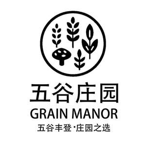

Trade Mark Journal No.2025/024 13 June 2025
UK00004210269 28 May 2025 (30)

- Class 30
- Udon noodles; Noodles; Ramen noodles; Soba noodles; Vermicelli [noodles]; Udon noodles [uncooked]; Rice noodles; Somen noodles [very thin wheat noodle, uncooked]; Instant udon noodles; Soba noodles [japanese noodles of buckwheat, uncooked]; Instant soba noodles; Somen noodles; Chinese noodles; Asian noodles; Shrimp noodles; Udon (Japanese style noodles); Egg noodles; Buckwheat noodles; Ramen [Japanese noodle-based dish]; Fried noodles; Chinese noodles [uncooked]; Starch noodles; Chinese rice noodles (bifun, uncooked); Instant chinese noodles; Ramen; Wholemeal noodles; Stir-fried noodles with vegetables (Japchae); Instant noodles; Dried noodles; Rice vermicelli; Pad thai (Thai stir-fried noodles); Rice pasta; Chow mein noodles; Rice dumplings; Instant cooking noodles; Dried and fresh pastas, noodles and dumplings; Vermicelli; Bean-starch noodles (harusame, uncooked); Flour for making dumplings of glutinous rice; Flour-based dumplings; Starch vermicelli; Pasta; Chow mein [noodle-based dishes]; Chinese stuffed dumplings (gyoza, cooked); Buckwheat pasta; Glutinous rice; Shrimp dumplings; Chinese steamed dumplings (shumai, cooked); Dumplings; Laksa; Lo mein [noodles]; Fish dumplings; Glutinous rice wrapped in bamboo leaves (Zongzi); Rice; Ribbon vermicelli; Vermicelli (Ribbon -); Chinese stuffed dumplings; Glutinous rice flour; Spaghetti [uncooked]; Rice sticks; Rice cake snacks.
So Good Import and Export Ltd